sERP in 10 minutes
Install sERP, open the sample company, and do the four jobs you'll repeat every month: invoices, payments, payroll and tax rule updates. VAT, withholding tax, social security and salary tax are always calculated for you from the approved tax rules.
1Before you start
You only install PostgreSQL yourself — sERP.bat takes care of Python. Or use Docker for both.
| What | Where to get it | Note |
|---|---|---|
| sERP.zip | Download from GitHub · source | Always the latest version. Unzip into any folder, for example inside your project folder |
| Python 3.10 or newer automatic | Nothing to do | sERP.bat finds Python by itself, or installs Python 3.12 for your user with winget. No "Add to PATH" needed. Manual install: python.org |
| PostgreSQL 16 or newer | postgresql.org/download/windows | Step by step in section 2. Microsoft SQL Server does not replace it |
| Docker Desktop alternative | docker.com | Runs PostgreSQL and sERP together — no Python or PostgreSQL install needed |
2Install PostgreSQL one time · about 5 minutes
sERP keeps the books in PostgreSQL. Without it, "Create sample database" ends with connection timeout expired.
- Open postgresql.org/download/windows and click Download the installer (it comes from EDB).
- Pick the newest version (16 or newer) for Windows x86-64 and run the downloaded file. Allow it to make changes.
- Click Next through the pages, keeping the defaults — the table shows what to look at.
- On Password, type a password for the
postgresuser twice. Write it down — sERP needs it. - On Port, keep
5432. - On the last page, untick "Launch Stack Builder at exit" and click Finish.
- Check it runs: press Win+R, type
services.msc, press Enter. Find postgresql-x64-NN (NN = version): Status Running, Startup type Automatic.
localhost, port 5432, user postgres and your password.| Installer page | What to do |
|---|---|
| Installation Directory | Keep the default |
| Select Components | Keep all ticked (Server, pgAdmin 4, Command Line Tools); Stack Builder is optional |
| Data Directory | Keep the default |
| Password | Choose and write down — this is the sERP database password |
| Port | 5432 (if it suggests 5433, another PostgreSQL exists — use that number in sERP) |
| Advanced Options (locale) | Keep [Default locale] |
| Summary / Ready to Install | Next, wait 1–3 minutes |
| Completing | Untick Stack Builder → Finish |
Connection timeout? Check in this order
- Is PostgreSQL installed? There should be a folder
C:\Program Files\PostgreSQL. Microsoft SQL Server is a different database and does not work with sERP. - Is the service running?
services.msc→ postgresql-x64-NN → Start; set Startup type to Automatic. - Right port? Default 5432; a second install often uses 5433. The port is in the installer summary and in
postgresql.conf. - Host: try
127.0.0.1instead oflocalhost. - Firewall / antivirus blocking the port — allow PostgreSQL in Windows Defender Firewall. For a database on another computer, it must also allow network connections (
listen_addresses,pg_hba.conf).
3Install & first launch
The first start takes about a minute. After that, sERP opens in a few seconds.
- Download sERP.zip from GitHub and unzip it.
- Double-click sERP.bat. A black window appears and prepares sERP — only the first time. If Python is missing it installs it for you (allow it if Windows asks).
- The sERP window opens with Welcome to sERP.
- Fill in the database: Host
localhost, Port5432, Databaseserp, Userpostgres, and your password. - Click Test connection. "Database 'serp' does not exist yet" is fine.
- Click Create sample database. In a few seconds you see the dashboard of Simply Handle IT Demo Co., Ltd.
- Next time just double-click sERP.bat. To stop sERP, close the black window.
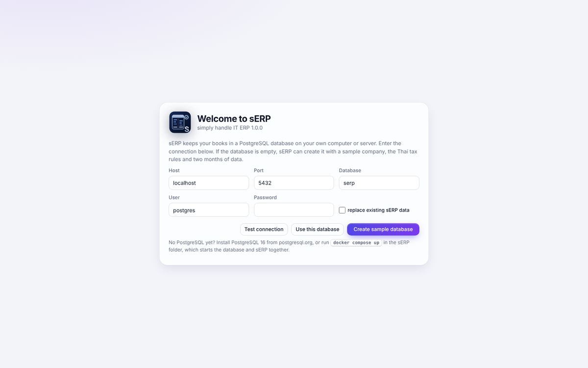
serp.config.json.With Docker instead optional
- Open
docker-compose.ymland changechange-me-pleaseto your own password (twice). - In the sERP folder run
docker compose up -d. - Open http://127.0.0.1:47394. The sample company is loaded automatically.
4The screen at a glance
Six views across the top; the company card below always shows cash, receivables, payables, profit and the health of the tax rules.
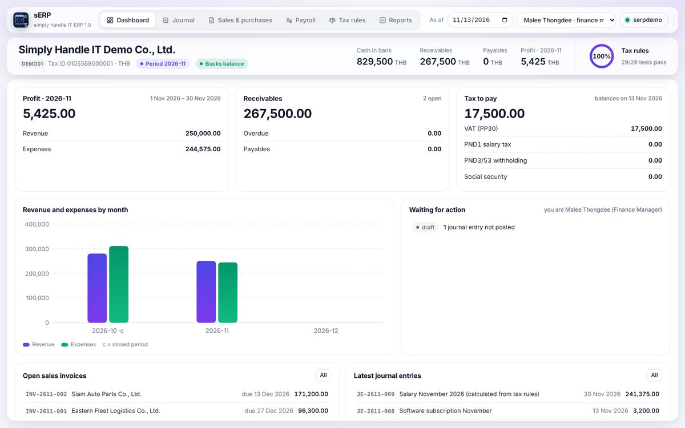
| Control | What it does |
|---|---|
| As of | Every view shows figures as of this date |
| Acting as | Who is making changes — approvals depend on it |
| ● serp | Database status; click to change the connection |
| ⚙ | Settings: accounting periods (close / reopen / add month) |
| 🎨 | Theme: Basic, Dark, Starry Night, Forest, Burning |
| Shortcut | Action |
|---|---|
| Alt + 1…6 | Switch view |
| Alt + N | New entry / invoice / payroll run |
| F5 | Reload data |
| F1 | Help |
| Esc | Close a dialog |
5Everyday tasks
Each task posts its own journal entry. You never type VAT, withholding, social security or salary tax — sERP takes them from the approved rules for the document date.
Create a sales invoice Sales & purchases
- Open Sales & purchases → Sales invoices → New invoice.
- Pick the customer and the date. Leave Due date empty to use the customer's payment terms.
- VAT shows the rule in force, e.g. Standard VAT · 7% (v2). Choose No VAT only when the seller is not VAT-registered.
- Add lines: description, account, quantity, unit price. Add line for more.
- Check the totals and click Create and post.
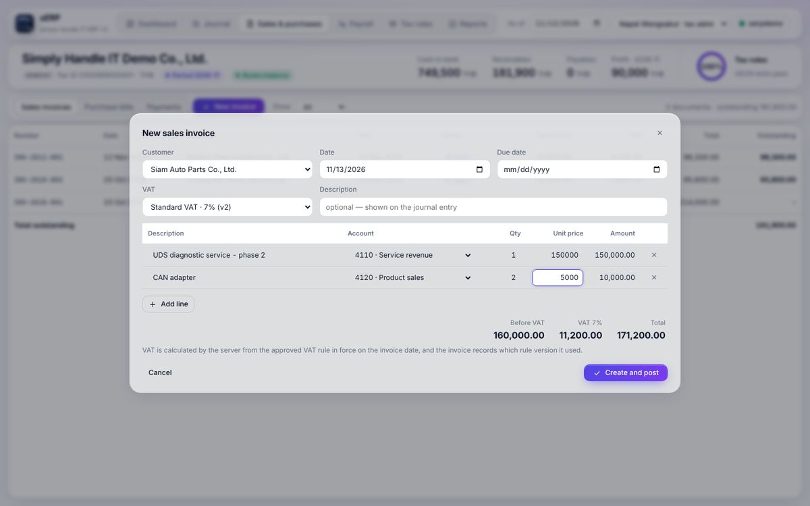
Receive or make a payment withholding tax
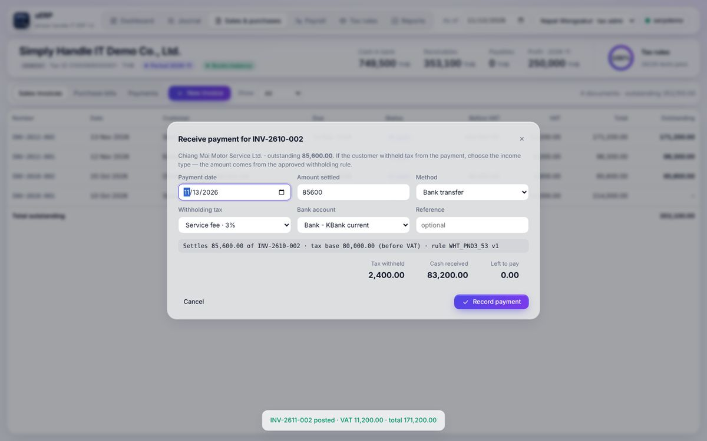
- Click an unpaid invoice or bill, then Receive payment (or Pay bill).
- Set the payment date and the amount — a smaller amount records a partial payment.
- Choose the withholding tax income type (service 3%, rent 5%, transport 1% …) or None.
- Check the preview: tax withheld, cash, left to pay. Payments under 1,000 baht have no withholding.
- Click Record payment.
Post a journal entry Journal
- Open Journal → New entry.
- Enter date, type and a description.
- Add lines with an account and a debit or a credit.
- When the bar turns green (Balanced), click Post entry — or Save as draft to finish later.
- Made a mistake on a posted entry? Open it and click Reverse…. Posted entries are never edited.
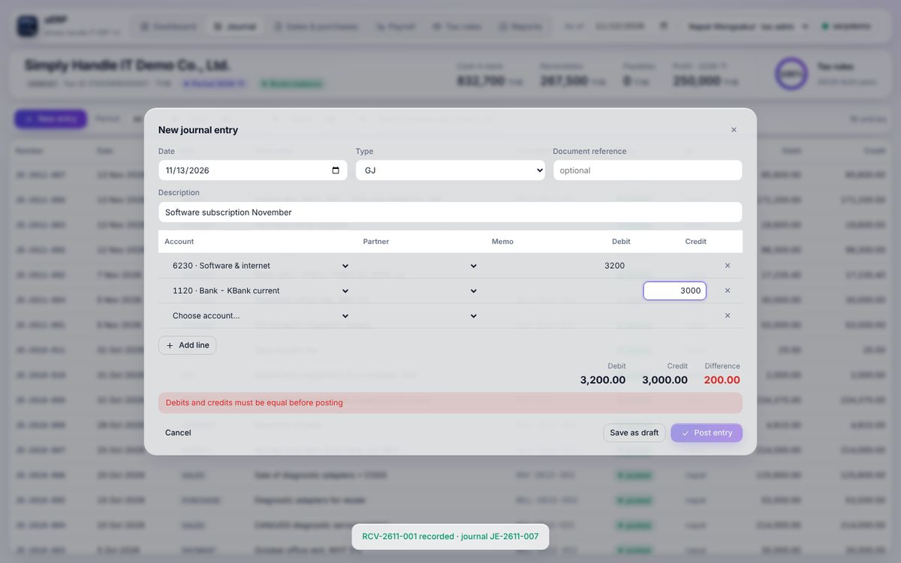
Run monthly payroll Payroll
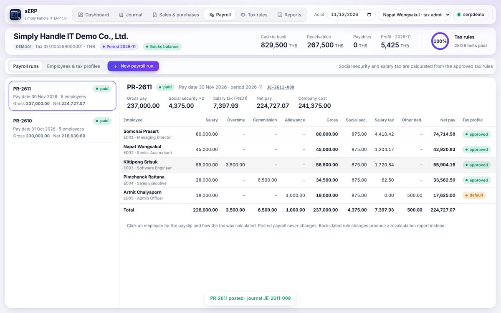
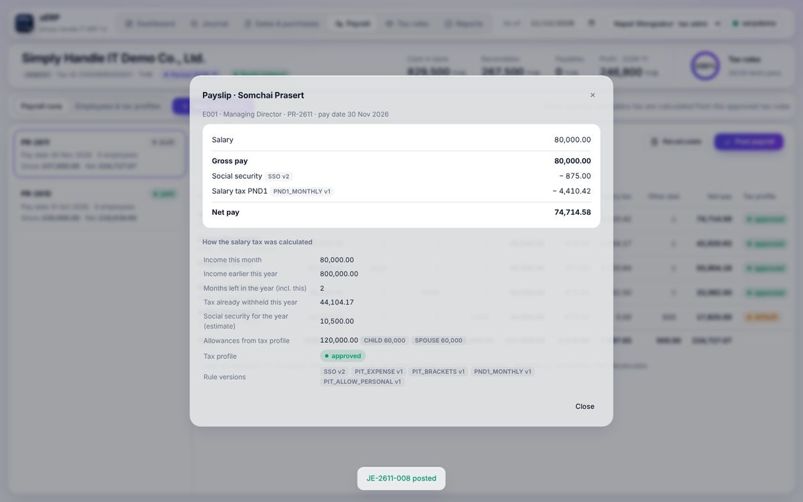
- Open Payroll → New payroll run.
- Check the pay date (last day of the month) and click Calculate draft.
- Type overtime, commission, allowance and other deductions in the white cells.
- Click Recalculate. Social security and salary tax (PND1) update from the rules.
- Check rows marked default — that employee has no tax profile yet (see below).
- Click Post payroll and confirm. The payroll journal entry is created and the run is locked.
Keep employee tax profiles up to date
- Payroll → Employees & tax profiles.
- Click Edit on an employee.
- Tick or fill the allowances: spouse without income, children, parents, life insurance premium.
- Click Save and approve (needs the payroll or tax admin role). The next payroll run uses it for the remaining months.
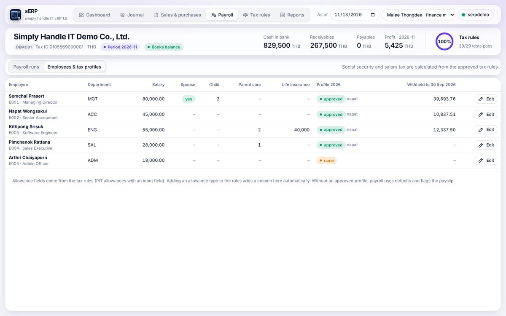
Month end
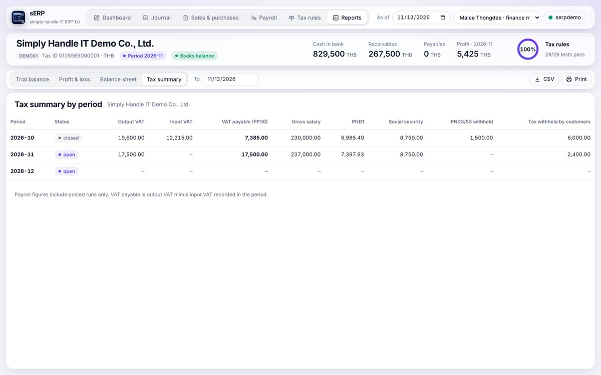
- Post the month's payroll and all invoices, bills and payments.
- Reports → Tax summary: amounts for PP30, PND1, PND3/53 and social security.
- Record the tax payments with Journal → New entry (debit the payable, credit the bank).
- Check Trial balance shows balanced; use CSV for your accountant.
- ⚙ → Accounting periods → Close the month, then Add next month when needed.
6Update tax rules with Claude
When a tax law changes, nobody edits code. The rules go out as a file, come back with a new draft version, and go live only after someone else approves them.
- Tax rules → Import / export → JSON (or Excel).
- Send the file to Claude with the law change and its source link. Copy text gives you a ready message.
- Drop the returned file on Import an updated file. Read the errors and the list of changes.
- Click Import as drafts, then Go to Approvals.
- Click Submit for approval.
- Change Acting as to an approver (finance manager or MD) and click Approve. VAT and withholding need 1 approval; salary tax and social security need 2.
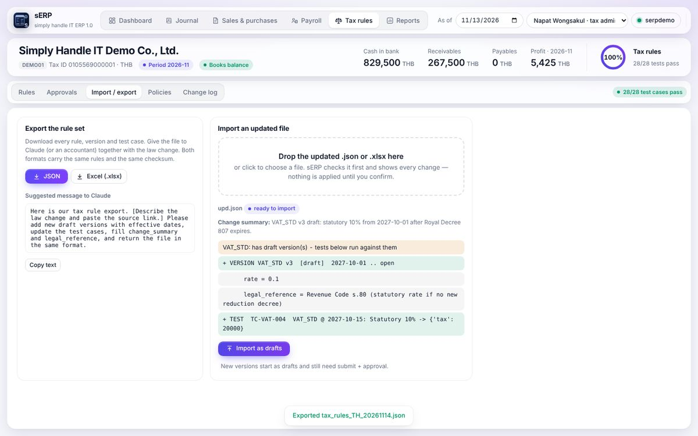
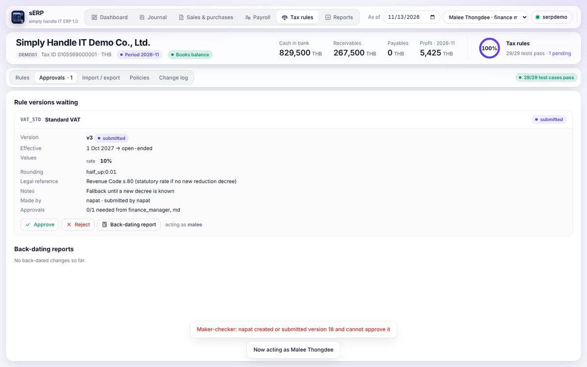
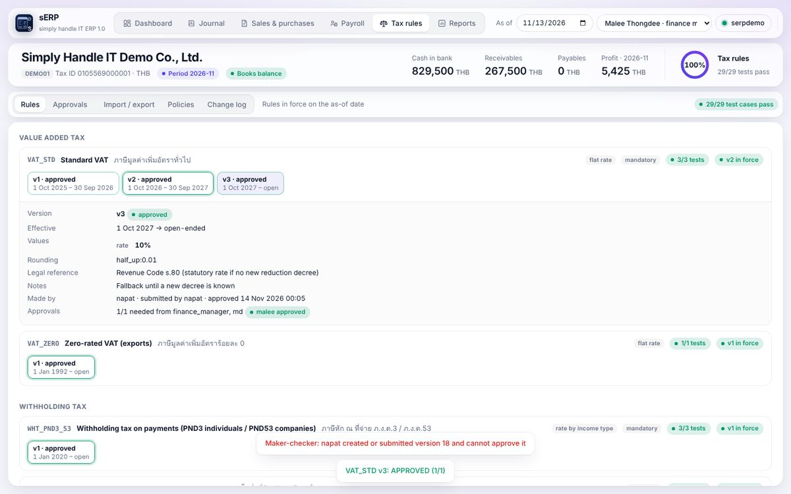
7Troubleshooting
| You see | Do this |
|---|---|
| "Could not install Python automatically" | Install Python 3.12 from python.org (default options, PATH not needed), then run sERP.bat again. |
| The black window runs but no app window opens | Open http://127.0.0.1:47394 in Edge or Chrome. |
| "connection timeout expired" / "PostgreSQL did not answer" | PostgreSQL is not installed or not running — follow Install PostgreSQL and its checklist. |
| "password authentication failed" | Wrong password for postgres — use the one chosen in the installer. |
| Red database pill / "Database unavailable" | Start PostgreSQL: Windows Services → postgresql-x64-16 → Start. Wrong password? Click the pill and enter it again. |
| "Period 2026-10 is closed" | Use a date in an open month, or ⚙ → Reopen the period (finance manager / MD). |
| "No accounting period covers …" | ⚙ → Add next month. |
| "Maker-checker: … cannot approve it" | Working as designed. Switch Acting as to a different approver. |
| "… a recalculation report must be confirmed first" | Approvals → Back-dating report, then a second person clicks Confirm; approve again. |
Import error about base_checksum | The file came from an older export. Export again and redo the change on the new file. |
| "… needs one of the roles" | The acting user lacks that role (e.g. only payroll users edit tax profiles). Switch user. |
| Want a fresh sample company | Click the database pill, tick replace existing sERP data, then Create sample database. This deletes the current data. |